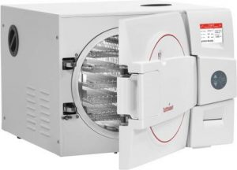
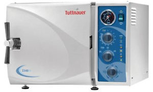
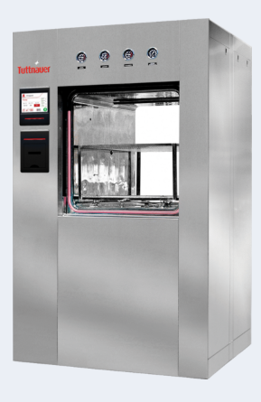

Laboratorijski sterilizatori za sterilizaciju tekućina, stakla i opasnog materijala. Autoklavi su posebno dizajnirani za laboratorijsku upotrebu u mikrobiološkim laboratorijima, farmaceutici, prehrambenoj i kemijskoj industriji. Poseban dizajn autoklava omogućava visoku kvalitetu i ponovljivost procesa, te dokumentiranje za laboratorijske zahtjeve i osiguranje kvalitete postupaka.
Autoklavi se proizvode kao vertikalni ili horizontalni i u raznim zapreminama komore za sterilizaciju. Autoklavi prema zahtjevu korisnika mogu biti opremljeni s raznim načinima hlađenja komore i steriliziranog materijala, filterima za filtriranje upusta i ispusta iz sterilizatora, printerom ili praćenjem rada sterilizatora preko kompjutora.
Tuttnauer laboratorijski sterilizatori su dobavlji u raznim izvedbama i veličinama:
ELV-D linija autoklava – vertikalni laboratorijski autoklavi, zapremine komore od 31 do 160 litara.
ELV linija autoklava – vertikalni automatski laboratorijski autoklavi, zapremine komore od 23 do 160 litara.
MLV linija autoklava – vertikalni polu amtomastki laboratorijski autoklavi, zepremine komore od 23 do 160 litara.
EL-D linija autoklava – horizontalni laboratorijski autoklavi za znanost, zapremina komore od 28 do 160 litara.
Veliki laboratorijski autoklavi – autoklavi velike zapremine, od 120 do 8840 litara.
Autoklavi za uzgoj životinja, vivarije i slično
Autoklavi za obradu opasnog materijala i otpada – zapremine do 5890 litara

Tuttnauer stolni sterilizatori objedinjuju zahtjeve za visokom učinkovitošću s kompaktnim dimenzijama i impresivnim dizajnom.
Sterilizatori iz ove linije su dostupni s komorama zapremine od 7.5 litara do 85 litara i dostupni su u različitim izvedbama.
B klasa sterilizatora – potpuno automatski, brzi pred i post vakuum, dizajnirani da pokrivaju široki raspon upotreba.
Potpuno automatski autoklavi – s „one touch microprocessor“ kontrolom zadovoljeni su svi zahtjevi za sterilizaciju. 5 pred programiranih programa može biti prilagođeno i zahtjevima korisnika.
Manualni autoklavi – ove autoklave krasi visoka izdržljivost i sigurnost, te lagan način uporade.
ELARA serija autoklava – eng
Pre&Post vakuum stolni sterilizatori
Automatski i manualni sterilizatori – eng

Tuttnauer-ova linija laboratorijskih sterilizatora s dokazanom i pouzdanom tehnologijom dizajnirana je za sve vrste sterilizacija u laboratorijima.
Laboratorijski sterilizatori su dostupni u veličinama zapremina komore od 19 do 160 litara, te u horizontalnoj ili vertikalnoj izvedbi.
Tuttnauer-ova linija laboratorijskih sterilizatora prvenstveno se koristi u laboratorijima, sveučilištima, bolnicama, istraživačkim institutima, laboratorijima javnog zdravstva, dijagnostici i u bio-tehnološkoj industriji.
Tuttnauer-ovi laboratorijski sterilizatori izrađeni su u skladu s najvišim svjetskim standardima, zahtjevima i direktivama.
PLAZMA STERILIZATORI – PlazMax
PlazMax linija plazma sterilizatora osigurava učinkovitu sterilizaciju za instrumente osjetljive na vlagu i temperaturu, posebice gastroenteroloških respiratornih endoskopa.
PlazMax linija pruža sterilizaciju s najmanje „neispravnih“ ciklusa od svih sterilizatora, na bazi hidrogen peroksida, ponuđenih na tržištu. S PlazMax sterilizatorima postižete najveći stupanj učinkovitosti rada i osiguravate da su vam instrumenti spremni kada to trebate.
PlazMax sterilizatori – eng
TUTTNAUER blog o sterilizaciji

BSL3, BSL4 Sterilizatori